Chapter 2
凸集 / Convex Sets
2.1 Affine and convex sets
2.1 仿射与凸集
2.1.1 Lines and line segments
2.1.1 直线与线段
Suppose $x_1 \ne x_2$ are two points in $\mathbb{R}^n$. Points of the form
$$ y = \theta x_1 + (1-\theta)x_2, $$
where $\theta \in \mathbb{R}$, form the line passing through $x_1$ and $x_2$. The parameter value $\theta = 0$ corresponds to $y = x_2$, and the parameter value $\theta = 1$ corresponds to $y = x_1$. Values of the parameter $\theta$ between 0 and 1 correspond to the (closed) line segment between $x_1$ and $x_2$.
设 $x_1 \ne x_2$ 为 $\mathbb{R}^n$ 中的两个点。形如
$$ y = \theta x_1 + (1-\theta)x_2, $$
（其中 $\theta \in \mathbb{R}$）的点构成过 $x_1$ 和 $x_2$ 的直线。参数值 $\theta = 0$ 对应 $y = x_2$，参数值 $\theta = 1$ 对应 $y = x_1$。参数 $\theta$ 介于 0 与 1 之间的值对应 $x_1$ 与 $x_2$ 之间的（闭）线段。
Expressing $y$ in the form
$$ y = x_2 + \theta(x_1 - x_2) $$
gives another interpretation: $y$ is the sum of the base point $x_2$ (corresponding to $\theta = 0$) and the direction $x_1 - x_2$ (which points from $x_2$ to $x_1$) scaled by the parameter $\theta$. Thus, $\theta$ gives the fraction of the way from $x_2$ to $x_1$ where $y$ lies. As $\theta$ increases from 0 to 1, the point $y$ moves from $x_2$ to $x_1$; for $\theta > 1$, the point $y$ lies on the line beyond $x_1$. This is illustrated in figure 2.1.
把 $y$ 写成
$$ y = x_2 + \theta(x_1 - x_2) $$
可得另一种解释：$y$ 是基点 $x_2$（对应 $\theta = 0$）与方向 $x_1 - x_2$（由 $x_2$ 指向 $x_1$）被参数 $\theta$ 缩放后之和。于是 $\theta$ 给出 $y$ 落在从 $x_2$ 到 $x_1$ 路径上的比例。当 $\theta$ 从 0 增到 1 时，点 $y$ 从 $x_2$ 移向 $x_1$；当 $\theta > 1$ 时，$y$ 落在越过 $x_1$ 的直线上。图 2.1 给出了说明。
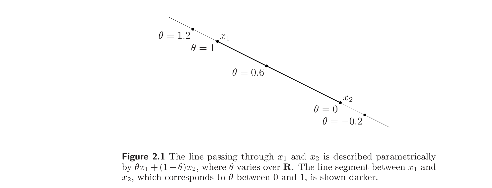
2.1.2 Affine sets
2.1.2 仿射集
A set $C \subseteq \mathbb{R}^n$ is affine if the line through any two distinct points in $C$ lies in $C$, i.e., if for any $x_1, x_2 \in C$ and $\theta \in \mathbb{R}$, we have $\theta x_1 + (1-\theta)x_2 \in C$. In other words, $C$ contains the linear combination of any two points in $C$, provided the coefficients in the linear combination sum to one.
若过 $C \subseteq \mathbb{R}^n$ 中任意两个不同点的直线都位于 $C$ 中，则称集合 $C$ 是仿射的（affine），即对任意 $x_1, x_2 \in C$ 和 $\theta \in \mathbb{R}$，有 $\theta x_1 + (1-\theta)x_2 \in C$。换言之，$C$ 包含其中任意两点的线性组合，只要该线性组合的系数之和为 1。
This idea can be generalized to more than two points. We refer to a point of the form $\theta_1 x_1 + \cdots + \theta_k x_k$, where $\theta_1 + \cdots + \theta_k = 1$, as an affine combination of the points $x_1, \ldots, x_k$. Using induction from the definition of affine set (i.e., that it contains every affine combination of two points in it), it can be shown that an affine set contains every affine combination of its points: If $C$ is an affine set, $x_1, \ldots, x_k \in C$, and $\theta_1 + \cdots + \theta_k = 1$, then the point $\theta_1 x_1 + \cdots + \theta_k x_k$ also belongs to $C$.
这一想法可推广到多于两个点。我们把形如 $\theta_1 x_1 + \cdots + \theta_k x_k$（其中 $\theta_1 + \cdots + \theta_k = 1$）的点称为 $x_1, \ldots, x_k$ 的仿射组合（affine combination）。由仿射集的定义（即它包含其中任意两点的仿射组合）通过归纳可证：仿射集包含其任意点的仿射组合——若 $C$ 是仿射集，$x_1, \ldots, x_k \in C$，且 $\theta_1 + \cdots + \theta_k = 1$，则点 $\theta_1 x_1 + \cdots + \theta_k x_k$ 也属于 $C$。
If $C$ is an affine set and $x_0 \in C$, then the set
$$ V = C - x_0 = \{x - x_0 \mid x \in C\} $$
is a subspace, i.e., closed under sums and scalar multiplication. To see this, suppose $v_1, v_2 \in V$ and $\alpha, \beta \in \mathbb{R}$. Then we have $v_1 + x_0 \in C$ and $v_2 + x_0 \in C$, and so
$$ \alpha v_1 + \beta v_2 + x_0 = \alpha(v_1 + x_0) + \beta(v_2 + x_0) + (1-\alpha-\beta)x_0 \in C, $$
since $C$ is affine, and $\alpha + \beta + (1-\alpha-\beta) = 1$. We conclude that $\alpha v_1 + \beta v_2 \in V$, since $\alpha v_1 + \beta v_2 + x_0 \in C$.
若 $C$ 是仿射集且 $x_0 \in C$，则集合
$$ V = C - x_0 = \{x - x_0 \mid x \in C\} $$
是一个子空间，即对加法和数乘封闭。为看出这一点，设 $v_1, v_2 \in V$，$\alpha, \beta \in \mathbb{R}$。则 $v_1 + x_0 \in C$ 且 $v_2 + x_0 \in C$，于是
$$ \alpha v_1 + \beta v_2 + x_0 = \alpha(v_1 + x_0) + \beta(v_2 + x_0) + (1-\alpha-\beta)x_0 \in C, $$
因为 $C$ 仿射，且 $\alpha + \beta + (1-\alpha-\beta) = 1$。由 $\alpha v_1 + \beta v_2 + x_0 \in C$ 得 $\alpha v_1 + \beta v_2 \in V$。
Thus, the affine set $C$ can be expressed as
$$ C = V + x_0 = \{v + x_0 \mid v \in V\}, $$
i.e., as a subspace plus an offset. The subspace $V$ associated with the affine set $C$ does not depend on the choice of $x_0$, so $x_0$ can be chosen as any point in $C$. We define the dimension of an affine set $C$ as the dimension of the subspace $V = C - x_0$, where $x_0$ is any element of $C$.
因此仿射集 $C$ 可表示为
$$ C = V + x_0 = \{v + x_0 \mid v \in V\}, $$
即一个子空间加上一个偏移。与仿射集 $C$ 关联的子空间 $V$ 不依赖于 $x_0$ 的选取，故 $x_0$ 可取 $C$ 中任一点。我们定义仿射集 $C$ 的维数为子空间 $V = C - x_0$ 的维数，其中 $x_0$ 为 $C$ 中任一元素。
Example 2.1 Solution set of linear equations. The solution set of a system of linear equations, $C = \{x \mid Ax = b\}$, where $A \in \mathbb{R}^{m\times n}$ and $b \in \mathbb{R}^m$, is an affine set. To show this, suppose $x_1, x_2 \in C$, i.e., $Ax_1 = b$, $Ax_2 = b$. Then for any $\theta$, we have
$$ A(\theta x_1 + (1-\theta)x_2) = \theta A x_1 + (1-\theta)A x_2 = \theta b + (1-\theta)b = b, $$
which shows that the affine combination $\theta x_1 + (1-\theta)x_2$ is also in $C$. The subspace associated with the affine set $C$ is the nullspace of $A$.
We also have a converse: every affine set can be expressed as the solution set of a system of linear equations.
例 2.1 线性方程组的解集。 线性方程组的解集 $C = \{x \mid Ax = b\}$（其中 $A \in \mathbb{R}^{m\times n}$，$b \in \mathbb{R}^m$）是仿射集。为证之，设 $x_1, x_2 \in C$，即 $Ax_1 = b$，$Ax_2 = b$。则对任意 $\theta$，有
$$ A(\theta x_1 + (1-\theta)x_2) = \theta A x_1 + (1-\theta)A x_2 = \theta b + (1-\theta)b = b, $$
这表明仿射组合 $\theta x_1 + (1-\theta)x_2$ 也在 $C$ 中。与仿射集 $C$ 关联的子空间是 $A$ 的零空间。
反之亦成立：每个仿射集都可表示为某个线性方程组的解集。
The set of all affine combinations of points in some set $C \subseteq \mathbb{R}^n$ is called the affine hull of $C$, and denoted $\mathbf{aff}\, C$:
$$ \mathbf{aff}\, C = \{\theta_1 x_1 + \cdots + \theta_k x_k \mid x_1, \ldots, x_k \in C,\; \theta_1 + \cdots + \theta_k = 1\}. $$
The affine hull is the smallest affine set that contains $C$, in the following sense: if $S$ is any affine set with $C \subseteq S$, then $\mathbf{aff}\, C \subseteq S$.
某集合 $C \subseteq \mathbb{R}^n$ 中所有点的仿射组合构成的集合，称为 $C$ 的仿射包（affine hull），记为 $\mathbf{aff}\, C$：
$$ \mathbf{aff}\, C = \{\theta_1 x_1 + \cdots + \theta_k x_k \mid x_1, \ldots, x_k \in C,\; \theta_1 + \cdots + \theta_k = 1\}. $$
仿射包是包含 $C$ 的最小仿射集，意义如下：若 $S$ 是任一满足 $C \subseteq S$ 的仿射集，则 $\mathbf{aff}\, C \subseteq S$。
2.1.3 Affine dimension and relative interior
2.1.3 仿射维数与相对内部
We define the affine dimension of a set $C$ as the dimension of its affine hull. Affine dimension is useful in the context of convex analysis and optimization, but is not always consistent with other definitions of dimension. As an example consider the unit circle in $\mathbb{R}^2$, i.e., $\{x \in \mathbb{R}^2 \mid x_1^2 + x_2^2 = 1\}$. Its affine hull is all of $\mathbb{R}^2$, so its affine dimension is two. By most definitions of dimension, however, the unit circle in $\mathbb{R}^2$ has dimension one.
我们定义集合 $C$ 的仿射维数为其仿射包的维数。仿射维数在凸分析与优化中很有用，但并不总与其他维数定义一致。例如 $\mathbb{R}^2$ 中的单位圆 $\{x \in \mathbb{R}^2 \mid x_1^2 + x_2^2 = 1\}$，其仿射包是整个 $\mathbb{R}^2$，故仿射维数为 2。然而按大多数维数定义，$\mathbb{R}^2$ 中的单位圆维数为 1。
If the affine dimension of a set $C \subseteq \mathbb{R}^n$ is less than $n$, then the set lies in the affine set $\mathbf{aff}\, C \ne \mathbb{R}^n$. We define the relative interior of the set $C$, denoted $\mathbf{relint}\, C$, as its interior relative to $\mathbf{aff}\, C$:
$$ \mathbf{relint}\, C = \{x \in C \mid B(x, r) \cap \mathbf{aff}\, C \subseteq C \text{ for some } r > 0\}, $$
where $B(x, r) = \{y \mid \|y - x\| \le r\}$, the ball of radius $r$ and center $x$ in the norm $\|\cdot\|$. (Here $\|\cdot\|$ is any norm; all norms define the same relative interior.) We can then define the relative boundary of a set $C$ as $\mathbf{cl}\, C \,\backslash\, \mathbf{relint}\, C$, where $\mathbf{cl}\, C$ is the closure of $C$.
若集合 $C \subseteq \mathbb{R}^n$ 的仿射维数小于 $n$，则该集合位于仿射集 $\mathbf{aff}\, C \ne \mathbb{R}^n$ 中。我们定义 $C$ 的相对内部（relative interior），记为 $\mathbf{relint}\, C$，为它相对于 $\mathbf{aff}\, C$ 的内部：
$$ \mathbf{relint}\, C = \{x \in C \mid B(x, r) \cap \mathbf{aff}\, C \subseteq C \text{ 对某 } r > 0\}, $$
其中 $B(x, r) = \{y \mid \|y - x\| \le r\}$ 是范数 $\|\cdot\|$ 下以 $x$ 为心、$r$ 为半径的球。（此处 $\|\cdot\|$ 为任意范数；所有范数给出相同的相对内部。）进而可定义集合 $C$ 的相对边界为 $\mathbf{cl}\, C \,\backslash\, \mathbf{relint}\, C$，其中 $\mathbf{cl}\, C$ 为 $C$ 的闭包。
Example 2.2 Consider a square in the $(x_1, x_2)$-plane in $\mathbb{R}^3$, defined as
$$ C = \{x \in \mathbb{R}^3 \mid -1 \le x_1 \le 1,\; -1 \le x_2 \le 1,\; x_3 = 0\}. $$
Its affine hull is the $(x_1, x_2)$-plane, i.e., $\mathbf{aff}\, C = \{x \in \mathbb{R}^3 \mid x_3 = 0\}$. The interior of $C$ is empty, but the relative interior is
$$ \mathbf{relint}\, C = \{x \in \mathbb{R}^3 \mid -1 < x_1 < 1,\; -1 < x_2 < 1,\; x_3 = 0\}. $$
Its boundary (in $\mathbb{R}^3$) is itself; its relative boundary is the wire-frame outline,
$$ \{x \in \mathbb{R}^3 \mid \max\{|x_1|, |x_2|\} = 1,\; x_3 = 0\}. $$
例 2.2 考虑 $\mathbb{R}^3$ 中 $(x_1, x_2)$-平面上的一个正方形，定义为
$$ C = \{x \in \mathbb{R}^3 \mid -1 \le x_1 \le 1,\; -1 \le x_2 \le 1,\; x_3 = 0\}. $$
其仿射包为 $(x_1, x_2)$-平面，即 $\mathbf{aff}\, C = \{x \in \mathbb{R}^3 \mid x_3 = 0\}$。$C$ 的内部为空，但相对内部为
$$ \mathbf{relint}\, C = \{x \in \mathbb{R}^3 \mid -1 < x_1 < 1,\; -1 < x_2 < 1,\; x_3 = 0\}. $$
其（$\mathbb{R}^3$ 中的）边界是其自身；其相对边界为线框轮廓
$$ \{x \in \mathbb{R}^3 \mid \max\{|x_1|, |x_2|\} = 1,\; x_3 = 0\}. $$
2.1.4 Convex sets
2.1.4 凸集
A set $C$ is convex if the line segment between any two points in $C$ lies in $C$, i.e., if for any $x_1, x_2 \in C$ and any $\theta$ with $0 \le \theta \le 1$, we have
$$ \theta x_1 + (1-\theta) x_2 \in C. $$
Roughly speaking, a set is convex if every point in the set can be seen by every other point, along an unobstructed straight path between them, where unobstructed means lying in the set. Every affine set is also convex, since it contains the entire line between any two distinct points in it, and therefore also the line segment between the points. Figure 2.2 illustrates some simple convex and nonconvex sets in $\mathbb{R}^2$.
若集合 $C$ 中任意两点之间的线段都位于 $C$ 中，则称 $C$ 是凸的，即对任意 $x_1, x_2 \in C$ 及任意满足 $0 \le \theta \le 1$ 的 $\theta$，有
$$ \theta x_1 + (1-\theta) x_2 \in C. $$
粗略地说，若集合中每个点都能被其他每个点沿一条无遮挡直线路径"看到"（无遮挡指路径位于集合内），则该集合是凸的。每个仿射集也是凸的，因为它包含其中任意两个不同点之间的整条直线，从而也包含两点间的线段。图 2.2 展示了 $\mathbb{R}^2$ 中一些简单的凸集与非凸集。
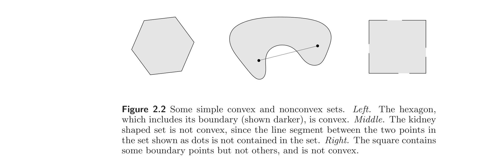
We call a point of the form $\theta_1 x_1 + \cdots + \theta_k x_k$, where $\theta_1 + \cdots + \theta_k = 1$ and $\theta_i \ge 0$, $i = 1, \ldots, k$, a convex combination of the points $x_1, \ldots, x_k$. As with affine sets, it can be shown that a set is convex if and only if it contains every convex combination of its points. A convex combination of points can be thought of as a mixture or weighted average of the points, with $\theta_i$ the fraction of $x_i$ in the mixture.
我们把形如 $\theta_1 x_1 + \cdots + \theta_k x_k$（其中 $\theta_1 + \cdots + \theta_k = 1$ 且 $\theta_i \ge 0$，$i = 1, \ldots, k$）的点称为 $x_1, \ldots, x_k$ 的凸组合（convex combination）。与仿射集类似，可证一个集合是凸的当且仅当它包含其任意点的凸组合。点的凸组合可看作这些点的混合或加权平均，$\theta_i$ 为 $x_i$ 在混合中所占比例。
The convex hull of a set $C$, denoted $\mathbf{conv}\, C$, is the set of all convex combinations of points in $C$:
$$ \mathbf{conv}\, C = \{\theta_1 x_1 + \cdots + \theta_k x_k \mid x_i \in C,\; \theta_i \ge 0,\; i = 1, \ldots, k,\; \theta_1 + \cdots + \theta_k = 1\}. $$
As the name suggests, the convex hull $\mathbf{conv}\, C$ is always convex. It is the smallest convex set that contains $C$: If $B$ is any convex set that contains $C$, then $\mathbf{conv}\, C \subseteq B$. Figure 2.3 illustrates the definition of convex hull.
集合 $C$ 的凸包（convex hull），记为 $\mathbf{conv}\, C$，是 $C$ 中所有点的凸组合构成的集合：
$$ \mathbf{conv}\, C = \{\theta_1 x_1 + \cdots + \theta_k x_k \mid x_i \in C,\; \theta_i \ge 0,\; i = 1, \ldots, k,\; \theta_1 + \cdots + \theta_k = 1\}. $$
顾名思义，凸包 $\mathbf{conv}\, C$ 总是凸的。它是包含 $C$ 的最小凸集：若 $B$ 是任一包含 $C$ 的凸集，则 $\mathbf{conv}\, C \subseteq B$。图 2.3 给出了凸包定义的说明。
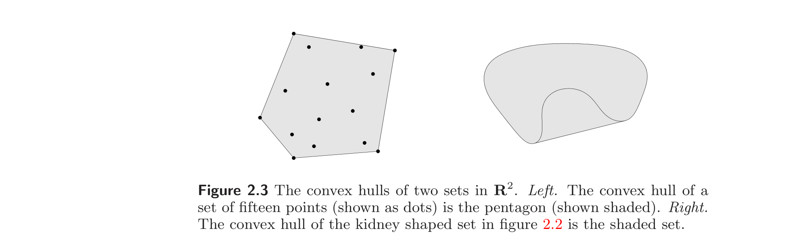
The idea of a convex combination can be generalized to include infinite sums, integrals, and, in the most general form, probability distributions. Suppose $\theta_1, \theta_2, \ldots$ satisfy
$$ \theta_i \ge 0,\quad i = 1, 2, \ldots, \qquad \sum_{i=1}^{\infty} \theta_i = 1, $$
and $x_1, x_2, \ldots \in C$, where $C \subseteq \mathbb{R}^n$ is convex. Then
$$ \sum_{i=1}^{\infty} \theta_i x_i \in C, $$
if the series converges. More generally, suppose $p : \mathbb{R}^n \to \mathbb{R}$ satisfies $p(x) \ge 0$ for all $x \in C$ and $\int_C p(x)\, dx = 1$, where $C \subseteq \mathbb{R}^n$ is convex. Then
$$ \int_C p(x)\, x\, dx \in C, $$
if the integral exists.
凸组合的概念可推广到包含无穷级数、积分，并在最一般的形式下包含概率分布。设 $\theta_1, \theta_2, \ldots$ 满足
$$ \theta_i \ge 0,\quad i = 1, 2, \ldots, \qquad \sum_{i=1}^{\infty} \theta_i = 1, $$
且 $x_1, x_2, \ldots \in C$，其中 $C \subseteq \mathbb{R}^n$ 是凸的。则当级数收敛时，
$$ \sum_{i=1}^{\infty} \theta_i x_i \in C. $$
更一般地，设 $p : \mathbb{R}^n \to \mathbb{R}$ 对所有 $x \in C$ 满足 $p(x) \ge 0$ 且 $\int_C p(x)\, dx = 1$，其中 $C \subseteq \mathbb{R}^n$ 是凸的。则当积分存在时，
$$ \int_C p(x)\, x\, dx \in C. $$
In the most general form, suppose $C \subseteq \mathbb{R}^n$ is convex and $x$ is a random vector with $x \in C$ with probability one. Then $E\, x \in C$. Indeed, this form includes all the others as special cases. For example, suppose the random variable $x$ only takes on the two values $x_1$ and $x_2$, with $\mathbf{prob}(x = x_1) = \theta$ and $\mathbf{prob}(x = x_2) = 1 - \theta$, where $0 \le \theta \le 1$. Then $E\, x = \theta x_1 + (1-\theta) x_2$, and we are back to a simple convex combination of two points.
在最一般的形式下，设 $C \subseteq \mathbb{R}^n$ 是凸的，$x$ 是以概率 1 取值于 $C$ 的随机向量。则 $E\, x \in C$。事实上，该形式包含前面所有情形作为特例。例如，设随机变量 $x$ 只取 $x_1$ 和 $x_2$ 两个值，$\mathbf{prob}(x = x_1) = \theta$，$\mathbf{prob}(x = x_2) = 1 - \theta$（$0 \le \theta \le 1$）。则 $E\, x = \theta x_1 + (1-\theta) x_2$，回到了两点的简单凸组合。
2.1.5 Cones
2.1.5 锥
A set $C$ is called a cone (or nonnegative homogeneous) if for every $x \in C$ and $\theta \ge 0$ we have $\theta x \in C$. A set $C$ is a convex cone if it is convex and a cone, which means that for any $x_1, x_2 \in C$ and $\theta_1, \theta_2 \ge 0$, we have
$$ \theta_1 x_1 + \theta_2 x_2 \in C. $$
Points of this form can be described geometrically as forming the two-dimensional pie slice with apex 0 and edges passing through $x_1$ and $x_2$. (See figure 2.4.)
若对每个 $x \in C$ 和 $\theta \ge 0$ 都有 $\theta x \in C$，则集合 $C$ 称为一个锥（cone，也称非负齐性的）。若 $C$ 既是凸集又是锥，则称之为凸锥，这意味着对任意 $x_1, x_2 \in C$ 和 $\theta_1, \theta_2 \ge 0$，有
$$ \theta_1 x_1 + \theta_2 x_2 \in C. $$
这种形式的点在几何上可描述为以 0 为顶点、以过 $x_1$ 和 $x_2$ 的射线为边的二维扇形切片（pie slice）。（见图 2.4。）
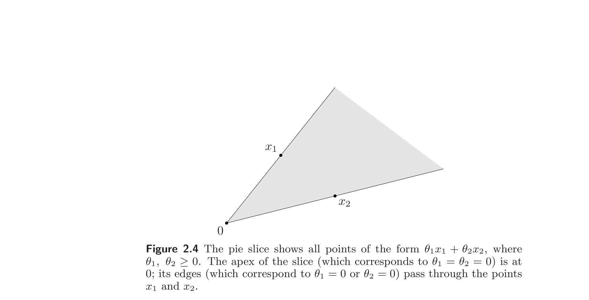
A point of the form $\theta_1 x_1 + \cdots + \theta_k x_k$ with $\theta_1, \ldots, \theta_k \ge 0$ is called a conic combination (or a nonnegative linear combination) of $x_1, \ldots, x_k$. If $x_i$ are in a convex cone $C$, then every conic combination of $x_i$ is in $C$. Conversely, a set $C$ is a convex cone if and only if it contains all conic combinations of its elements. Like convex (or affine) combinations, the idea of conic combination can be generalized to infinite sums and integrals.
形如 $\theta_1 x_1 + \cdots + \theta_k x_k$（$\theta_1, \ldots, \theta_k \ge 0$）的点称为 $x_1, \ldots, x_k$ 的锥组合（conic combination，或非负线性组合）。若 $x_i$ 属于凸锥 $C$，则 $x_i$ 的每个锥组合都在 $C$ 中。反之，集合 $C$ 是凸锥当且仅当它包含其元素的所有锥组合。与凸组合（或仿射组合）一样，锥组合的概念也可推广到无穷级数与积分。
The conic hull of a set $C$ is the set of all conic combinations of points in $C$, i.e.,
$$ \{\theta_1 x_1 + \cdots + \theta_k x_k \mid x_i \in C,\; \theta_i \ge 0,\; i = 1, \ldots, k\}, $$
which is also the smallest convex cone that contains $C$ (see figure 2.5).
集合 $C$ 的锥包（conic hull）是 $C$ 中所有点的锥组合构成的集合，即
$$ \{\theta_1 x_1 + \cdots + \theta_k x_k \mid x_i \in C,\; \theta_i \ge 0,\; i = 1, \ldots, k\}, $$
它也是包含 $C$ 的最小凸锥（见图 2.5）。
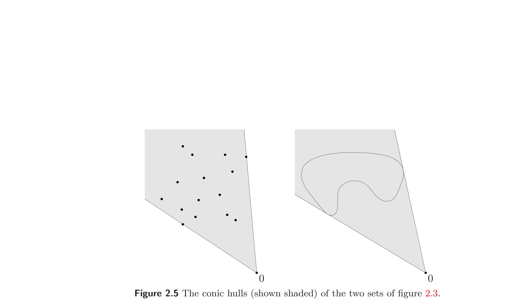
2.2 Some important examples
2.2 一些重要例子
In this section we describe some important examples of convex sets which we will encounter throughout the rest of the book. We start with some simple examples.
- The empty set $\emptyset$, any single point (i.e., singleton) $\{x_0\}$, and the whole space $\mathbb{R}^n$ are affine (hence, convex) subsets of $\mathbb{R}^n$.
- Any line is affine. If it passes through zero, it is a subspace, hence also a convex cone.
- A line segment is convex, but not affine (unless it reduces to a point).
- A ray, which has the form $\{x_0 + \theta v \mid \theta \ge 0\}$, where $v \ne 0$, is convex, but not affine. It is a convex cone if its base $x_0$ is $0$.
- Any subspace is affine, and a convex cone (hence convex).
本节描述一些在全书其余部分将反复出现的重要凸集。我们从一些简单例子开始。
- 空集 $\emptyset$、任意单点集 $\{x_0\}$ 以及全空间 $\mathbb{R}^n$ 都是 $\mathbb{R}^n$ 的仿射（从而凸的）子集。
- 任意直线是仿射的。若它过原点，则是子空间，从而也是凸锥。
- 线段是凸的，但不是仿射的（除非退化为一个点）。
- 射线 $\{x_0 + \theta v \mid \theta \ge 0\}$（$v \ne 0$）是凸的，但不是仿射的。若其基点 $x_0$ 为 $0$，则是凸锥。
- 任意子空间都是仿射的，且是凸锥（从而是凸的）。
2.2.1 Hyperplanes and halfspaces
2.2.1 超平面与半空间
A hyperplane is a set of the form
$$ \{x \mid a^T x = b\}, $$
where $a \in \mathbb{R}^n$, $a \ne 0$, and $b \in \mathbb{R}$. Analytically it is the solution set of a nontrivial linear equation among the components of $x$ (and hence an affine set). Geometrically, the hyperplane $\{x \mid a^T x = b\}$ can be interpreted as the set of points with a constant inner product to a given vector $a$, or as a hyperplane with normal vector $a$; the constant $b \in \mathbb{R}$ determines the offset of the hyperplane from the origin. This geometric interpretation can be understood by expressing the hyperplane in the form
$$ \{x \mid a^T (x - x_0) = 0\}, $$
where $x_0$ is any point in the hyperplane (i.e., any point that satisfies $a^T x_0 = b$). This representation can in turn be expressed as
$$ \{x \mid a^T (x - x_0) = 0\} = x_0 + a^\perp, $$
where $a^\perp$ denotes the orthogonal complement of $a$, i.e., the set of all vectors orthogonal to it:
$$ a^\perp = \{v \mid a^T v = 0\}. $$
This shows that the hyperplane consists of an offset $x_0$, plus all vectors orthogonal to the (normal) vector $a$. These geometric interpretations are illustrated in figure 2.6.
超平面（hyperplane）是形如
$$ \{x \mid a^T x = b\}, $$
的集合，其中 $a \in \mathbb{R}^n$，$a \ne 0$，$b \in \mathbb{R}$。解析上它是 $x$ 各分量间一个非平凡线性方程的解集（从而是仿射集）。几何上，超平面 $\{x \mid a^T x = b\}$ 可解释为与给定向量 $a$ 有常数内积的点集，或一个以 $a$ 为法向量的超平面；常数 $b \in \mathbb{R}$ 决定超平面相对于原点的偏移。把超平面写成
$$ \{x \mid a^T (x - x_0) = 0\}, $$
（其中 $x_0$ 是超平面中任一点，即满足 $a^T x_0 = b$ 的点）即可理解这一几何解释。该表示又可写成
$$ \{x \mid a^T (x - x_0) = 0\} = x_0 + a^\perp, $$
其中 $a^\perp$ 表示 $a$ 的正交补，即所有与 $a$ 正交的向量构成的集合：
$$ a^\perp = \{v \mid a^T v = 0\}. $$
这表明超平面由偏移 $x_0$ 加上所有与（法）向量 $a$ 正交的向量构成。这些几何解释见图 2.6。
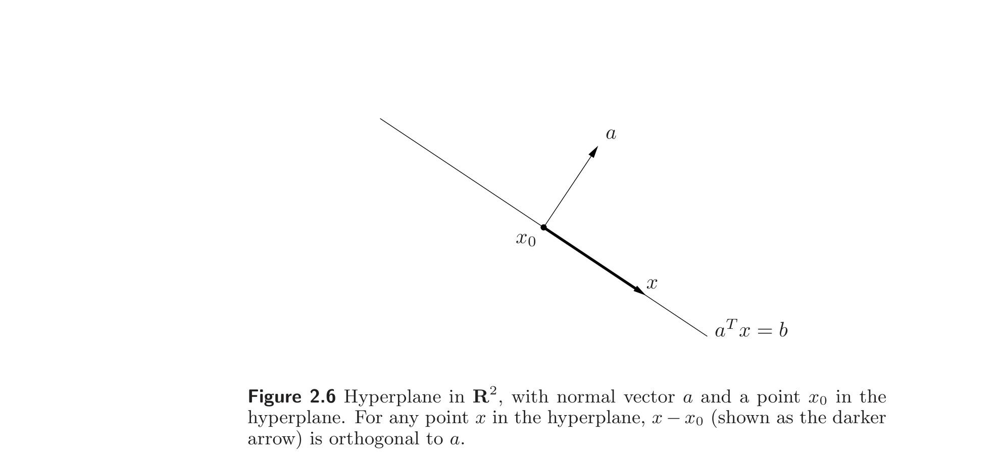
A hyperplane divides $\mathbb{R}^n$ into two halfspaces. A (closed) halfspace is a set of the form
$$ \{x \mid a^T x \le b\}, \tag{2.1}$$
where $a \ne 0$, i.e., the solution set of one (nontrivial) linear inequality. Halfspaces are convex, but not affine. This is illustrated in figure 2.7.
超平面把 $\mathbb{R}^n$ 分成两个半空间。（闭）半空间（halfspace）是形如
$$ \{x \mid a^T x \le b\}, \tag{2.1}$$
的集合（$a \ne 0$），即一个（非平凡）线性不等式的解集。半空间是凸的，但不是仿射的。见图 2.7。
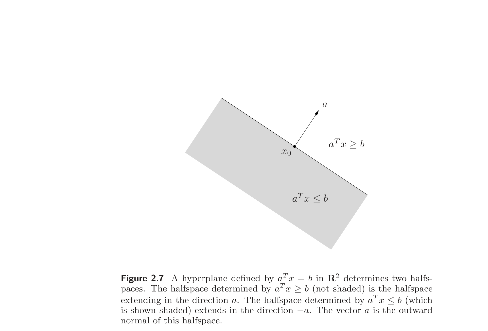
The halfspace (2.1) can also be expressed as
$$ \{x \mid a^T (x - x_0) \le 0\}, \tag{2.2}$$
where $x_0$ is any point on the associated hyperplane, i.e., satisfies $a^T x_0 = b$. The representation (2.2) suggests a simple geometric interpretation: the halfspace consists of $x_0$ plus any vector that makes an obtuse (or right) angle with the (outward normal) vector $a$. This is illustrated in figure 2.8.
半空间 (2.1) 也可表示为
$$ \{x \mid a^T (x - x_0) \le 0\}, \tag{2.2}$$
其中 $x_0$ 是关联超平面上任一点，即满足 $a^T x_0 = b$。表示 (2.2) 给出一个简单的几何解释：半空间由 $x_0$ 加上所有与（外法）向量 $a$ 成钝角（或直角）的向量构成。见图 2.8。
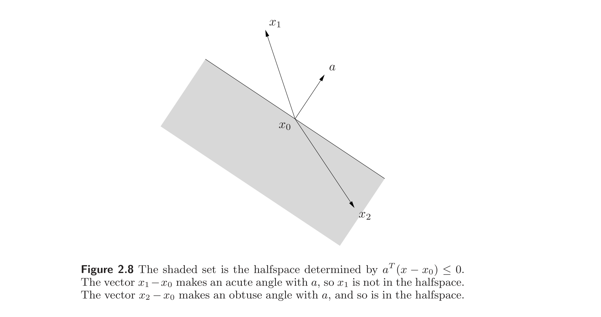
The boundary of the halfspace (2.1) is the hyperplane $\{x \mid a^T x = b\}$. The set $\{x \mid a^T x < b\}$, which is the interior of the halfspace $\{x \mid a^T x \le b\}$, is called an open halfspace.
半空间 (2.1) 的边界是超平面 $\{x \mid a^T x = b\}$。集合 $\{x \mid a^T x < b\}$，即半空间 $\{x \mid a^T x \le b\}$ 的内部，称为开半空间。
2.2.2 Euclidean balls and ellipsoids
2.2.2 欧氏球与椭球
A (Euclidean) ball (or just ball) in $\mathbb{R}^n$ has the form
$$ B(x_c, r) = \{x \mid \|x - x_c\|_2 \le r\} = \{x \mid (x-x_c)^T (x-x_c) \le r^2\}, $$
where $r > 0$, and $\|\cdot\|_2$ denotes the Euclidean norm, i.e., $\|u\|_2 = (u^T u)^{1/2}$. The vector $x_c$ is the center of the ball and the scalar $r$ is its radius; $B(x_c, r)$ consists of all points within a distance $r$ of the center $x_c$. Another common representation for the Euclidean ball is
$$ B(x_c, r) = \{x_c + r u \mid \|u\|_2 \le 1\}. $$
$\mathbb{R}^n$ 中的（欧氏）球（或简称球）形如
$$ B(x_c, r) = \{x \mid \|x - x_c\|_2 \le r\} = \{x \mid (x-x_c)^T (x-x_c) \le r^2\}, $$
其中 $r > 0$，$\|\cdot\|_2$ 为欧氏范数，即 $\|u\|_2 = (u^T u)^{1/2}$。向量 $x_c$ 是球心，标量 $r$ 是半径；$B(x_c, r)$ 由所有与球心 $x_c$ 距离不超过 $r$ 的点构成。欧氏球的另一种常用表示是
$$ B(x_c, r) = \{x_c + r u \mid \|u\|_2 \le 1\}. $$
A Euclidean ball is a convex set: if $\|x_1 - x_c\|_2 \le r$, $\|x_2 - x_c\|_2 \le r$, and $0 \le \theta \le 1$, then
$$ \begin{aligned} \|\theta x_1 + (1-\theta) x_2 - x_c\|_2 &= \|\theta(x_1 - x_c) + (1-\theta)(x_2 - x_c)\|_2 \\ &\le \theta \|x_1 - x_c\|_2 + (1-\theta) \|x_2 - x_c\|_2 \\ &\le r. \end{aligned} $$
(Here we use the homogeneity property and triangle inequality for $\|\cdot\|_2$; see §A.1.2.)
欧氏球是凸集：若 $\|x_1 - x_c\|_2 \le r$，$\|x_2 - x_c\|_2 \le r$，$0 \le \theta \le 1$，则
$$ \begin{aligned} \|\theta x_1 + (1-\theta) x_2 - x_c\|_2 &= \|\theta(x_1 - x_c) + (1-\theta)(x_2 - x_c)\|_2 \\ &\le \theta \|x_1 - x_c\|_2 + (1-\theta) \|x_2 - x_c\|_2 \\ &\le r. \end{aligned} $$
（此处用到 $\|\cdot\|_2$ 的齐性与三角不等式；见 §A.1.2。）
A related family of convex sets is the ellipsoids, which have the form
$$ \mathcal{E} = \{x \mid (x - x_c)^T P^{-1} (x - x_c) \le 1\}, \tag{2.3}$$
where $P = P^T \succ 0$, i.e., $P$ is symmetric and positive definite. The vector $x_c \in \mathbb{R}^n$ is the center of the ellipsoid. The matrix $P$ determines how far the ellipsoid extends in every direction from $x_c$; the lengths of the semi-axes of $\mathcal{E}$ are given by $\sqrt{\lambda_i}$, where $\lambda_i$ are the eigenvalues of $P$. A ball is an ellipsoid with $P = r^2 I$. Figure 2.9 shows an ellipsoid in $\mathbb{R}^2$.
一族相关的凸集是椭球（ellipsoid），形如
$$ \mathcal{E} = \{x \mid (x - x_c)^T P^{-1} (x - x_c) \le 1\}, \tag{2.3}$$
其中 $P = P^T \succ 0$，即 $P$ 对称正定。向量 $x_c \in \mathbb{R}^n$ 是椭球的中心。矩阵 $P$ 决定椭球从 $x_c$ 向各方向延伸多远；$\mathcal{E}$ 的半轴长度为 $\sqrt{\lambda_i}$，其中 $\lambda_i$ 为 $P$ 的特征值。球是 $P = r^2 I$ 的椭球。图 2.9 给出了 $\mathbb{R}^2$ 中的椭球。
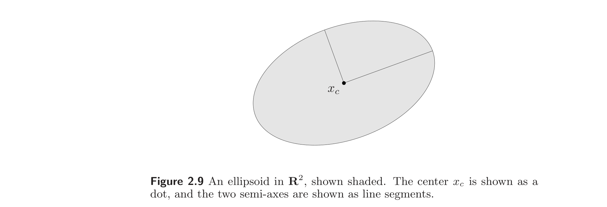
Another common representation of an ellipsoid is
$$ \mathcal{E} = \{x_c + A u \mid \|u\|_2 \le 1\}, \tag{2.4}$$
where $A$ is square and nonsingular. In this representation we can assume without loss of generality that $A$ is symmetric and positive definite. By taking $A = P^{1/2}$, this representation gives the ellipsoid defined in (2.3). When the matrix $A$ in (2.4) is symmetric positive semidefinite but singular, the set in (2.4) is called a degenerate ellipsoid; its affine dimension is equal to the rank of $A$. Degenerate ellipsoids are also convex.
椭球的另一种常用表示是
$$ \mathcal{E} = \{x_c + A u \mid \|u\|_2 \le 1\}, \tag{2.4}$$
其中 $A$ 方阵且非奇异。该表示下不妨设 $A$ 对称正定。取 $A = P^{1/2}$ 即得 (2.3) 定义的椭球。当 (2.4) 中矩阵 $A$ 对称半正定但奇异时，(2.4) 中的集合称为退化椭球；其仿射维数等于 $A$ 的秩。退化椭球也是凸的。
2.2.3 Norm balls and norm cones
2.2.3 范数球与范数锥
Suppose $\|\cdot\|$ is any norm on $\mathbb{R}^n$ (see §A.1.2). From the general properties of norms it can be shown that a norm ball of radius $r$ and center $x_c$, given by $\{x \mid \|x - x_c\| \le r\}$, is convex. The norm cone associated with the norm $\|\cdot\|$ is the set
$$ \mathcal{C} = \{(x, t) \mid \|x\| \le t\} \subseteq \mathbb{R}^{n+1}. $$
It is (as the name suggests) a convex cone.
设 $\|\cdot\|$ 为 $\mathbb{R}^n$ 上的任一范数（见 §A.1.2）。由范数的一般性质可证：以 $x_c$ 为心、$r$ 为半径的范数球 $\{x \mid \|x - x_c\| \le r\}$ 是凸的。与范数 $\|\cdot\|$ 关联的范数锥（norm cone）是集合
$$ \mathcal{C} = \{(x, t) \mid \|x\| \le t\} \subseteq \mathbb{R}^{n+1}. $$
它（顾名思义）是凸锥。
Example 2.3 The second-order cone is the norm cone for the Euclidean norm, i.e.,
$$ \mathcal{C} = \left\{(x, t) \in \mathbb{R}^{n+1} \,\middle|\, \|x\|_2 \le t\right\} = \left\{ \begin{bmatrix} x \\ t \end{bmatrix} \,\middle|\, \begin{bmatrix} x \\ t \end{bmatrix}^T \begin{bmatrix} I & 0 \\ 0 & -1 \end{bmatrix} \begin{bmatrix} x \\ t \end{bmatrix} \le 0,\; t \ge 0 \right\}. $$
The second-order cone is also known by several other names. It is called the quadratic cone, since it is defined by a quadratic inequality. It is also called the Lorentz cone or ice-cream cone. Figure 2.10 shows the second-order cone in $\mathbb{R}^3$.
例 2.3 二阶锥（second-order cone）是欧氏范数对应的范数锥，即
$$ \mathcal{C} = \left\{(x, t) \in \mathbb{R}^{n+1} \,\middle|\, \|x\|_2 \le t\right\} = \left\{ \begin{bmatrix} x \\ t \end{bmatrix} \,\middle|\, \begin{bmatrix} x \\ t \end{bmatrix}^T \begin{bmatrix} I & 0 \\ 0 & -1 \end{bmatrix} \begin{bmatrix} x \\ t \end{bmatrix} \le 0,\; t \ge 0 \right\}. $$
二阶锥还有几个别名。它被称为二次锥（quadratic cone），因为由二次不等式定义。它也称为 Lorentz 锥或冰淇淋锥。图 2.10 给出 $\mathbb{R}^3$ 中的二阶锥。
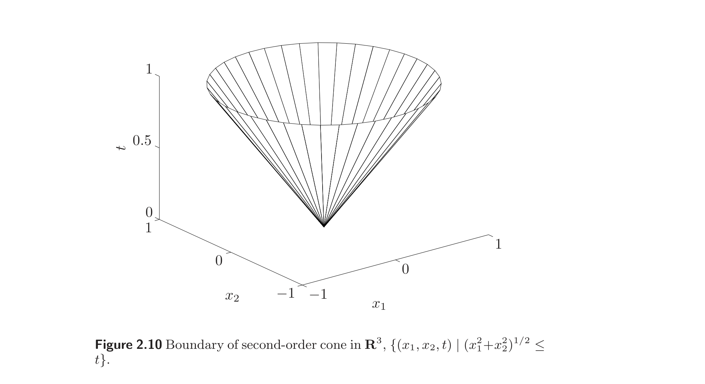
2.2.4 Polyhedra
2.2.4 多面体
A polyhedron is defined as the solution set of a finite number of linear equalities and inequalities:
$$ \mathcal{P} = \{x \mid a_j^T x \le b_j,\; j = 1, \ldots, m,\; c_j^T x = d_j,\; j = 1, \ldots, p\}. \tag{2.5}$$
A polyhedron is thus the intersection of a finite number of halfspaces and hyperplanes. Affine sets (e.g., subspaces, hyperplanes, lines), rays, line segments, and halfspaces are all polyhedra. It is easily shown that polyhedra are convex sets. A bounded polyhedron is sometimes called a polytope, but some authors use the opposite convention (i.e., polytope for any set of the form (2.5), and polyhedron when it is bounded). Figure 2.11 shows an example of a polyhedron defined as the intersection of five halfspaces.
多面体（polyhedron）定义为有限个线性等式与不等式的解集：
$$ \mathcal{P} = \{x \mid a_j^T x \le b_j,\; j = 1, \ldots, m,\; c_j^T x = d_j,\; j = 1, \ldots, p\}. \tag{2.5}$$
因此多面体是有限个半空间与超平面的交集。仿射集（如子空间、超平面、直线）、射线、线段和半空间都是多面体。易证多面体是凸集。有界多面体有时称为多胞体（polytope），但也有作者采用相反约定（即把 (2.5) 形式的任意集合称多胞体，有界时才称多面体）。图 2.11 给出了由五个半空间交集定义的多面体示例。
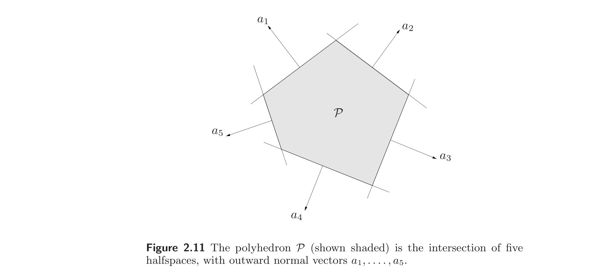
It will be convenient to use the compact notation
$$ \mathcal{P} = \{x \mid Ax \preceq b,\; Cx = d\} \tag{2.6}$$
for (2.5), where
$$ A = \begin{bmatrix} a_1^T \\ \vdots \\ a_m^T \end{bmatrix}, \qquad C = \begin{bmatrix} c_1^T \\ \vdots \\ c_p^T \end{bmatrix}, $$
and the symbol $\preceq$ denotes vector inequality or componentwise inequality in $\mathbb{R}^m$: $u \preceq v$ means $u_i \le v_i$ for $i = 1, \ldots, m$.
为方便，用紧致记号
$$ \mathcal{P} = \{x \mid Ax \preceq b,\; Cx = d\} \tag{2.6}$$
表示 (2.5)，其中
$$ A = \begin{bmatrix} a_1^T \\ \vdots \\ a_m^T \end{bmatrix}, \qquad C = \begin{bmatrix} c_1^T \\ \vdots \\ c_p^T \end{bmatrix}, $$
符号 $\preceq$ 表示 $\mathbb{R}^m$ 中的向量不等式或分量式不等式：$u \preceq v$ 意即对 $i = 1, \ldots, m$ 有 $u_i \le v_i$。
Example 2.4 The nonnegative orthant is the set of points with nonnegative components, i.e.,
$$ \mathbb{R}^n_+ = \{x \in \mathbb{R}^n \mid x_i \ge 0,\; i = 1, \ldots, n\} = \{x \in \mathbb{R}^n \mid x \succeq 0\}. $$
(Here $\mathbb{R}_+$ denotes the set of nonnegative numbers: $\mathbb{R}_+ = \{x \in \mathbb{R} \mid x \ge 0\}$.) The nonnegative orthant is a polyhedron and a cone (and therefore called a polyhedral cone).
例 2.4 非负象限（nonnegative orthant）是分量非负的点集，即
$$ \mathbb{R}^n_+ = \{x \in \mathbb{R}^n \mid x_i \ge 0,\; i = 1, \ldots, n\} = \{x \in \mathbb{R}^n \mid x \succeq 0\}. $$
（此处 $\mathbb{R}_+$ 表示非负实数集：$\mathbb{R}_+ = \{x \in \mathbb{R} \mid x \ge 0\}$。）非负象限既是多面体又是锥（故称为多面体锥）。
Simplexes
单纯形
Simplexes are another important family of polyhedra. Suppose the $k+1$ points $v_0, \ldots, v_k \in \mathbb{R}^n$ are affinely independent, which means $v_1 - v_0, \ldots, v_k - v_0$ are linearly independent. The simplex determined by them is given by
$$ C = \mathbf{conv}\{v_0, \ldots, v_k\} = \{\theta_0 v_0 + \cdots + \theta_k v_k \mid \theta \succeq 0,\; \mathbf{1}^T \theta = 1\}, \tag{2.7}$$
where $\mathbf{1}$ denotes the vector with all entries one. The affine dimension of this simplex is $k$, so it is sometimes referred to as a $k$-dimensional simplex in $\mathbb{R}^n$.
单纯形是另一族重要的多面体。设 $k+1$ 个点 $v_0, \ldots, v_k \in \mathbb{R}^n$ 仿射无关，即 $v_1 - v_0, \ldots, v_k - v_0$ 线性无关。由它们确定的单纯形为
$$ C = \mathbf{conv}\{v_0, \ldots, v_k\} = \{\theta_0 v_0 + \cdots + \theta_k v_k \mid \theta \succeq 0,\; \mathbf{1}^T \theta = 1\}, \tag{2.7}$$
其中 $\mathbf{1}$ 表示所有分量均为 1 的向量。该单纯形的仿射维数为 $k$，故有时称为 $\mathbb{R}^n$ 中的 $k$ 维单纯形。
Example 2.5 Some common simplexes. A 1-dimensional simplex is a line segment; a 2-dimensional simplex is a triangle (including its interior); and a 3-dimensional simplex is a tetrahedron.
The unit simplex is the $n$-dimensional simplex determined by the zero vector and the unit vectors, i.e., $0, e_1, \ldots, e_n \in \mathbb{R}^n$. It can be expressed as the set of vectors that satisfy
$$ x \succeq 0, \qquad \mathbf{1}^T x \le 1. $$
The probability simplex is the $(n-1)$-dimensional simplex determined by the unit vectors $e_1, \ldots, e_n \in \mathbb{R}^n$. It is the set of vectors that satisfy
$$ x \succeq 0, \qquad \mathbf{1}^T x = 1. $$
Vectors in the probability simplex correspond to probability distributions on a set with $n$ elements, with $x_i$ interpreted as the probability of the $i$th element.
例 2.5 一些常见单纯形。 1 维单纯形是线段；2 维单纯形是三角形（含内部）；3 维单纯形是四面体。
单位单纯形是由零向量与单位向量 $0, e_1, \ldots, e_n \in \mathbb{R}^n$ 确定的 $n$ 维单纯形。它可表示为满足
$$ x \succeq 0, \qquad \mathbf{1}^T x \le 1 $$
的向量集合。概率单纯形是由单位向量 $e_1, \ldots, e_n \in \mathbb{R}^n$ 确定的 $(n-1)$ 维单纯形。它是满足
$$ x \succeq 0, \qquad \mathbf{1}^T x = 1 $$
的向量集合。概率单纯形中的向量对应于 $n$ 元集合上的概率分布，$x_i$ 解释为第 $i$ 个元素的概率。
Convex hull description of polyhedra
多面体的凸包描述
The convex hull of the finite set $\{v_1, \ldots, v_k\}$ is
$$ \mathbf{conv}\{v_1, \ldots, v_k\} = \{\theta_1 v_1 + \cdots + \theta_k v_k \mid \theta \succeq 0,\; \mathbf{1}^T \theta = 1\}. $$
This set is a polyhedron, and bounded, but (except in special cases, e.g., a simplex) it is not simple to express it in the form (2.5), i.e., by a set of linear equalities and inequalities.
有限集 $\{v_1, \ldots, v_k\}$ 的凸包为
$$ \mathbf{conv}\{v_1, \ldots, v_k\} = \{\theta_1 v_1 + \cdots + \theta_k v_k \mid \theta \succeq 0,\; \mathbf{1}^T \theta = 1\}. $$
该集合是有界多面体，但（除单纯形等特殊情形外）把它表示成 (2.5) 形式（即一组线性等式与不等式）并不容易。
A generalization of this convex hull description is
$$ \{\theta_1 v_1 + \cdots + \theta_k v_k \mid \theta_1 + \cdots + \theta_m = 1,\; \theta_i \ge 0,\; i = 1, \ldots, k\}, \tag{2.9}$$
where $m \le k$. Here we consider nonnegative linear combinations of $v_i$, but only the first $m$ coefficients are required to sum to one. Alternatively, we can interpret (2.9) as the convex hull of the points $v_1, \ldots, v_m$, plus the conic hull of the points $v_{m+1}, \ldots, v_k$.
该凸包描述的一个推广是
$$ \{\theta_1 v_1 + \cdots + \theta_k v_k \mid \theta_1 + \cdots + \theta_m = 1,\; \theta_i \ge 0,\; i = 1, \ldots, k\}, \tag{2.9}$$
其中 $m \le k$。这里考虑 $v_i$ 的非负线性组合，但只要求前 $m$ 个系数之和为 1。等价地，可把 (2.9) 解释为点 $v_1, \ldots, v_m$ 的凸包加上点 $v_{m+1}, \ldots, v_k$ 的锥包。
The set (2.9) defines a polyhedron, and conversely, every polyhedron can be represented in this form (although we will not show this). The question of how a polyhedron is represented is subtle, and has very important practical consequences. As a simple example consider the unit ball in the $\ell_\infty$-norm in $\mathbb{R}^n$,
$$ C = \{x \mid |x_i| \le 1,\; i = 1, \ldots, n\}. $$
The set $C$ can be described in the form (2.5) with $2n$ linear inequalities $\pm e_i^T x \le 1$, where $e_i$ is the $i$th unit vector. To describe it in the convex hull form (2.9) requires at least $2n$ points:
$$ C = \mathbf{conv}\{v_1, \ldots, v_{2n}\}, $$
where $v_1, \ldots, v_{2n}$ are the $2n$ vectors all of whose components are $1$ or $-1$. Thus the size of the two descriptions differs greatly, for large $n$.
集合 (2.9) 定义一个多面体；反之，每个多面体都可表示为此形式（此处不予证明）。多面体如何表示是一个微妙的问题，且有非常重要的实际后果。举一个简单例子：$\mathbb{R}^n$ 中 $\ell_\infty$-范数的单位球
$$ C = \{x \mid |x_i| \le 1,\; i = 1, \ldots, n\}. $$
$C$ 可用 (2.5) 形式以 $2n$ 个线性不等式 $\pm e_i^T x \le 1$（$e_i$ 为第 $i$ 个单位向量）描述。而用凸包形式 (2.9) 描述则至少需要 $2n$ 个点：
$$ C = \mathbf{conv}\{v_1, \ldots, v_{2n}\}, $$
其中 $v_1, \ldots, v_{2n}$ 是分量全为 $1$ 或 $-1$ 的 $2n$ 个向量。故当 $n$ 大时，两种描述的规模差异巨大。
2.2.5 The positive semidefinite cone
2.2.5 正半定锥
We use the notation $\mathbf{S}^n$ to denote the set of symmetric $n \times n$ matrices,
$$ \mathbf{S}^n = \{X \in \mathbb{R}^{n\times n} \mid X = X^T\}, $$
which is a vector space with dimension $n(n+1)/2$. We use the notation $\mathbf{S}^n_+$ to denote the set of symmetric positive semidefinite matrices:
$$ \mathbf{S}^n_+ = \{X \in \mathbf{S}^n \mid X \succeq 0\}, $$
and the notation $\mathbf{S}^n_{++}$ to denote the set of symmetric positive definite matrices:
$$ \mathbf{S}^n_{++} = \{X \in \mathbf{S}^n \mid X \succ 0\}. $$
(This notation is meant to be analogous to $\mathbb{R}_+$, which denotes the nonnegative reals, and $\mathbb{R}_{++}$, which denotes the positive reals.)
我们用 $\mathbf{S}^n$ 表示 $n \times n$ 对称矩阵的集合
$$ \mathbf{S}^n = \{X \in \mathbb{R}^{n\times n} \mid X = X^T\}, $$
它是维数为 $n(n+1)/2$ 的向量空间。用 $\mathbf{S}^n_+$ 表示对称半正定矩阵的集合
$$ \mathbf{S}^n_+ = \{X \in \mathbf{S}^n \mid X \succeq 0\}, $$
用 $\mathbf{S}^n_{++}$ 表示对称正定矩阵的集合
$$ \mathbf{S}^n_{++} = \{X \in \mathbf{S}^n \mid X \succ 0\}. $$
（此记号意在类比 $\mathbb{R}_+$（非负实数）与 $\mathbb{R}_{++}$（正实数）。）
The set $\mathbf{S}^n_+$ is a convex cone: if $\theta_1, \theta_2 \ge 0$ and $A, B \in \mathbf{S}^n_+$, then $\theta_1 A + \theta_2 B \in \mathbf{S}^n_+$. This can be seen directly from the definition of positive semidefiniteness: for any $x \in \mathbb{R}^n$, we have
$$ x^T (\theta_1 A + \theta_2 B) x = \theta_1 x^T A x + \theta_2 x^T B x \ge 0, $$
if $A \succeq 0$, $B \succeq 0$ and $\theta_1, \theta_2 \ge 0$.
集合 $\mathbf{S}^n_+$ 是凸锥：若 $\theta_1, \theta_2 \ge 0$ 且 $A, B \in \mathbf{S}^n_+$，则 $\theta_1 A + \theta_2 B \in \mathbf{S}^n_+$。这可由半正定性的定义直接看出：对任意 $x \in \mathbb{R}^n$，
$$ x^T (\theta_1 A + \theta_2 B) x = \theta_1 x^T A x + \theta_2 x^T B x \ge 0, $$
当 $A \succeq 0$，$B \succeq 0$ 且 $\theta_1, \theta_2 \ge 0$ 时成立。
Example 2.6 Positive semidefinite cone in $\mathbf{S}^2$. We have
$$ X = \begin{bmatrix} x & y \\ y & z \end{bmatrix} \in \mathbf{S}^2_+ \iff x \ge 0,\; z \ge 0,\; xz \ge y^2. $$
The boundary of this cone is shown in figure 2.12, plotted in $\mathbb{R}^3$ as $(x, y, z)$.
例 2.6 $\mathbf{S}^2$ 中的正半定锥。 有
$$ X = \begin{bmatrix} x & y \\ y & z \end{bmatrix} \in \mathbf{S}^2_+ \iff x \ge 0,\; z \ge 0,\; xz \ge y^2. $$
该锥的边界见图 2.12，在 $\mathbb{R}^3$ 中以 $(x, y, z)$ 绘出。
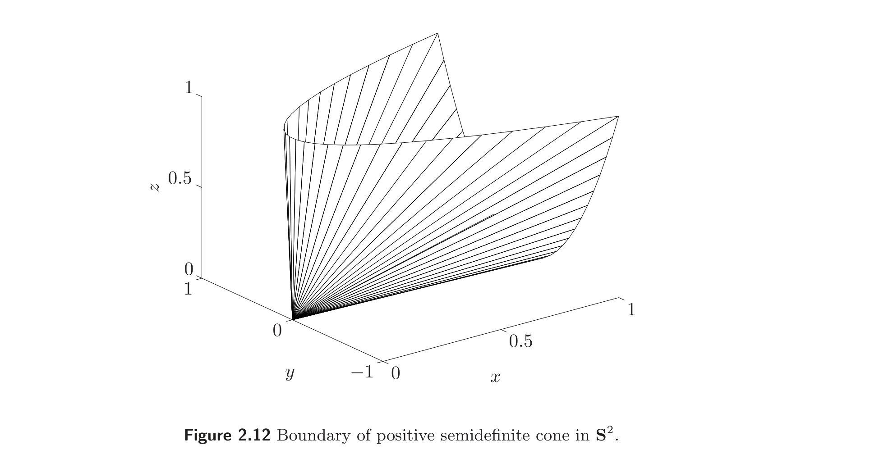
2.3 Operations that preserve convexity
2.3 保持凸性的运算
In this section we describe some operations that preserve convexity of sets, or allow us to construct convex sets from others. These operations, together with the simple examples described in §2.2, form a calculus of convex sets that is useful for determining or establishing convexity of sets.
本节描述一些保持集合凸性、或从其他集合构造凸集的运算。这些运算连同 §2.2 中描述的简单例子，构成一套凸集的"微积分"，对判定或证明集合的凸性很有用。
2.3.1 Intersection
2.3.1 交集
Convexity is preserved under intersection: if $S_1$ and $S_2$ are convex, then $S_1 \cap S_2$ is convex. This property extends to the intersection of an infinite number of sets: if $S_\alpha$ is convex for every $\alpha \in \mathcal{A}$, then $\bigcap_{\alpha \in \mathcal{A}} S_\alpha$ is convex. (Subspaces, affine sets, and convex cones are also closed under arbitrary intersections.) As a simple example, a polyhedron is the intersection of halfspaces and hyperplanes (which are convex), and therefore is convex.
凸性在交运算下保持：若 $S_1$、$S_2$ 是凸的，则 $S_1 \cap S_2$ 是凸的。该性质可推广到无穷多个集合的交集：若对每个 $\alpha \in \mathcal{A}$，$S_\alpha$ 是凸的，则 $\bigcap_{\alpha \in \mathcal{A}} S_\alpha$ 是凸的。（子空间、仿射集和凸锥也在任意交集下封闭。）一个简单例子：多面体是半空间与超平面（都是凸的）的交集，因此是凸的。
Example 2.7 The positive semidefinite cone $\mathbf{S}^n_+$ can be expressed as
$$ \bigcap_{z \ne 0} \{X \in \mathbf{S}^n \mid z^T X z \ge 0\}. $$
For each $z \ne 0$, $z^T X z$ is a (not identically zero) linear function of $X$, so the sets $\{X \in \mathbf{S}^n \mid z^T X z \ge 0\}$ are, in fact, halfspaces in $\mathbf{S}^n$. Thus the positive semidefinite cone is the intersection of an infinite number of halfspaces, and so is convex.
例 2.7 正半定锥 $\mathbf{S}^n_+$ 可表示为
$$ \bigcap_{z \ne 0} \{X \in \mathbf{S}^n \mid z^T X z \ge 0\}. $$
对每个 $z \ne 0$，$z^T X z$ 是 $X$ 的（不恒为零的）线性函数，故集合 $\{X \in \mathbf{S}^n \mid z^T X z \ge 0\}$ 实际上是 $\mathbf{S}^n$ 中的半空间。因此正半定锥是无穷多个半空间的交集，从而是凸的。
Example 2.8 We consider the set
$$ S = \{x \in \mathbb{R}^m \mid |p(t)| \le 1 \text{ for } |t| \le \pi/3\}, \tag{2.10}$$
where $p(t) = \sum_{k=1}^m x_k \cos kt$. The set $S$ can be expressed as the intersection of an infinite number of slabs: $S = \bigcap_{|t| \le \pi/3} S_t$, where
$$ S_t = \{x \mid -1 \le (\cos t, \ldots, \cos mt)^T x \le 1\}, $$
and so is convex. The definition and the set are illustrated in figures 2.13 and 2.14, for $m = 2$.
例 2.8 考虑集合
$$ S = \{x \in \mathbb{R}^m \mid |p(t)| \le 1 \text{ 对 } |t| \le \pi/3\}, \tag{2.10}$$
其中 $p(t) = \sum_{k=1}^m x_k \cos kt$。集合 $S$ 可表示为无穷多个板条的交集：$S = \bigcap_{|t| \le \pi/3} S_t$，其中
$$ S_t = \{x \mid -1 \le (\cos t, \ldots, \cos mt)^T x \le 1\}, $$
因而是凸的。其定义与集合见图 2.13 与 2.14（$m = 2$）。
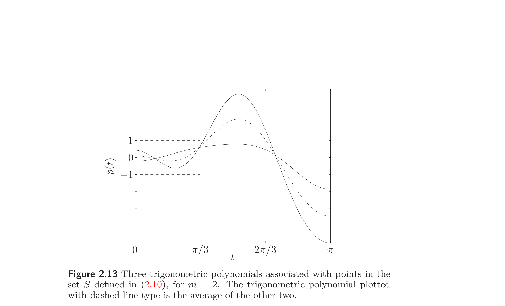
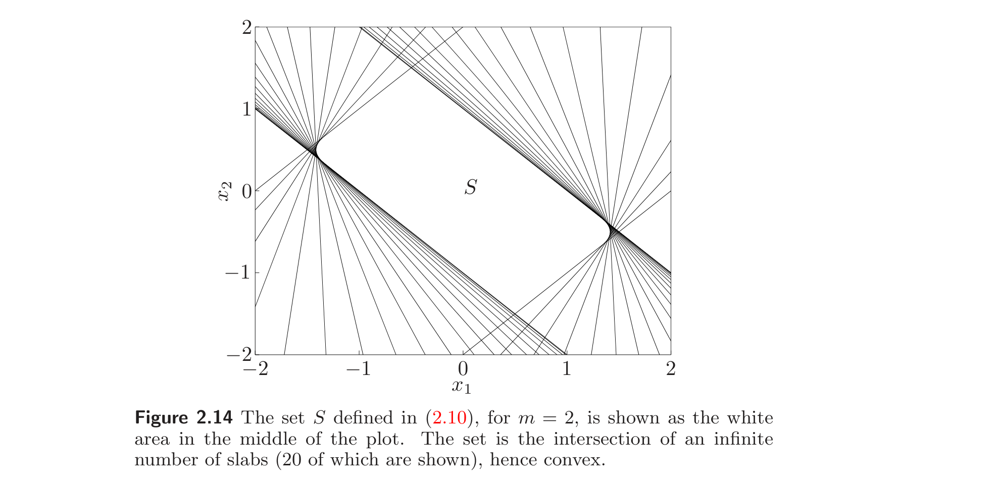
In the examples above we establish convexity of a set by expressing it as a (possibly infinite) intersection of halfspaces. We will see in §2.5.1 that a converse holds: every closed convex set $S$ is a (usually infinite) intersection of halfspaces. In fact, a closed convex set $S$ is the intersection of all halfspaces that contain it:
$$ S = \bigcap \{H \mid H \text{ halfspace},\; S \subseteq H\}. $$
在上面的例子中，我们通过把集合表示为（可能是无穷个）半空间的交集来证明凸性。我们将在 §2.5.1 看到反方向也成立：每个闭凸集 $S$ 都是（通常是无穷个）半空间的交集。事实上，闭凸集 $S$ 是所有包含它的半空间的交集：
$$ S = \bigcap \{H \mid H \text{ 半空间},\; S \subseteq H\}. $$
2.3.2 Affine functions
2.3.2 仿射函数
Recall that a function $f : \mathbb{R}^n \to \mathbb{R}^m$ is affine if it is a sum of a linear function and a constant, i.e., if it has the form $f(x) = Ax + b$, where $A \in \mathbb{R}^{m\times n}$ and $b \in \mathbb{R}^m$. Suppose $S \subseteq \mathbb{R}^n$ is convex and $f : \mathbb{R}^n \to \mathbb{R}^m$ is an affine function. Then the image of $S$ under $f$,
$$ f(S) = \{f(x) \mid x \in S\}, $$
is convex.
回忆：函数 $f : \mathbb{R}^n \to \mathbb{R}^m$ 是仿射的，如果它是一个线性函数与常数之和，即形如 $f(x) = Ax + b$（$A \in \mathbb{R}^{m\times n}$，$b \in \mathbb{R}^m$）。设 $S \subseteq \mathbb{R}^n$ 是凸的，$f : \mathbb{R}^n \to \mathbb{R}^m$ 是仿射函数。则 $S$ 在 $f$ 下的像
$$ f(S) = \{f(x) \mid x \in S\} $$
是凸的。